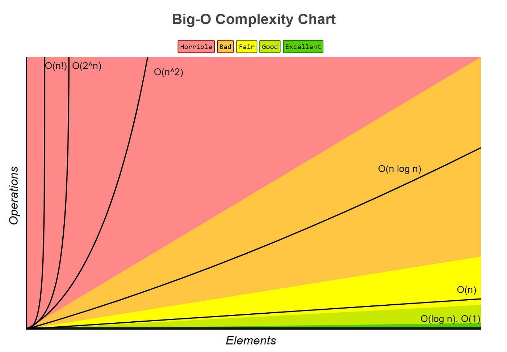

Data Structures and Algorithms: Algorithm Analysis and Correctness
Back to Data Structures and Algorithms guideline
Algorithm Analysis and Correctness
A program can return the expected answer for several examples and still be unsuitable as an algorithmic solution. It may fail on an edge case, rely on an unstated assumption, require too much memory, or become unusably slow when the input grows. Algorithm design therefore begins before coding and continues after a program appears to work.
A disciplined analysis asks three connected questions:
| Question | What must be established? |
|---|---|
| What is the problem? | The valid inputs, required outputs, constraints, and relationship between them |
| Why is the algorithm correct? | Every valid input terminates with an output satisfying the specification |
| How efficiently does it run? | How time and memory grow as the input size increases |
Correctness and efficiency are different obligations. A correct quadratic-time algorithm may be too slow for an array of one million elements, while a fast algorithm that fails for duplicate values is not a solution at all. This chapter develops a common language for both obligations and applies it to representative problems from the LeetCode Top 100 Liked study plan.
| Concept | Hot 100 case used in this chapter |
|---|---|
| Problem specification, ADTs, and time-space trade-offs | Two Sum |
| Recurrence relations and recursive growth | Climbing Stairs |
| Loop invariants and correctness proofs | Move Zeroes |
| Amortized analysis | Daily Temperatures |
Problem Specification and Algorithmic Thinking
A computational problem describes a relationship between valid inputs and acceptable outputs. A useful formal model is
\[P=(I,O,R),\]
where \(I\) is the set of valid inputs, \(O\) is the set of possible outputs, and \(R\subseteq I\times O\) is the relation that determines which outputs are correct for each input. An algorithm \(A\) solves \(P\) when, for every \(x\in I\), it terminates and returns some \(y\in O\) such that \((x,y)\in R\).
This definition separates the problem from a particular implementation. The same relation \(R\) may be satisfied by a brute-force algorithm, a hash-based algorithm, or another method. They solve the same problem but may have very different resource requirements.
Before selecting a data structure or writing a loop, translate the natural-language prompt into the following elements:
| Element | Guiding question |
|---|---|
| Input model | What objects are supplied, and what does the input size \(n\) mean? |
| Preconditions | What facts may the algorithm assume? |
| Postconditions | What must be true about the returned result? |
| Constraints | Which running times and memory costs are plausible? |
| Edge cases | What happens for the smallest input, duplicates, negative values, or repeated values? |
| Mutation policy | May the algorithm modify the input? |
Constraints are not administrative details. They are algorithmic information. If \(n\leq 20\), enumerating subsets may be reasonable; if \(n=10^5\), an \(O(n^2)\) design is usually disqualified before implementation.
Hot 100 Case: Two Sum
LeetCode 1 - Two Sum asks for the indices of two distinct array elements whose values add to a target. The problem guarantees exactly one valid answer.
| Specification component | Two Sum |
|---|---|
| Input | Integer array nums of length \(n\) and integer target |
| Preconditions | \(n\geq 2\); exactly one valid pair exists |
| Output | Two indices \(i\) and \(j\) |
| Postcondition | \(i\neq j\) and \(\text{nums}[i]+\text{nums}[j]=\text{target}\) |
| Relevant constraint | \(n\) can reach \(10^4\), motivating a method faster than checking all pairs |
For example, with nums = [8, 1, 5, 3] and target = 6, the valid output is [1, 2]. The specification asks for indices rather than values, so returning [1, 5] would not satisfy the postcondition.
The brute-force method directly enumerates every pair. The improved method processes the array from left to right and stores each previously seen value in a map. When the current value is \(x\), the only value that can complete the pair is \(\text{target}-x\).
Python solutions: brute force and one-pass hash map
from typing import List
class BruteForceSolution:
def twoSum(self, nums: List[int], target: int) -> List[int]:
# Try every unordered pair exactly once.
for i in range(len(nums)):
for j in range(i + 1, len(nums)):
if nums[i] + nums[j] == target:
return [i, j]
# The LeetCode precondition says this line is unreachable.
raise ValueError("No valid pair")
class Solution:
def twoSum(self, nums: List[int], target: int) -> List[int]:
# Map each value already processed to its array index.
seen: dict[int, int] = {}
for index, value in enumerate(nums):
complement = target - value
# Search before insertion so one element cannot match itself.
if complement in seen:
return [seen[complement], index]
# Make the current value available to later positions.
seen[value] = index
raise ValueError("No valid pair")A short execution trace makes the map’s role explicit:
| Current index | Value | Required complement | Map before lookup | Action |
|---|---|---|---|---|
| 0 | 8 | -2 | {} |
Store 8: 0 |
| 1 | 1 | 5 | {8: 0} |
Store 1: 1 |
| 2 | 5 | 1 | {8: 0, 1: 1} |
Return [1, 2] |
The returned pair is sound because the lookup succeeds only when a stored value equals target - value. It is complete under the problem’s precondition: if the unique pair is at positions \(p<q\), then the value at \(p\) has already been inserted when the algorithm reaches \(q\). Checking the map before inserting the current value also guarantees \(p\neq q\).
Abstract Data Types, Interfaces, and Implementations
An abstract data type (ADT) defines a collection of values and the operations that clients may perform on them. It specifies what each operation means without requiring a particular representation. A data structure is a concrete way to implement that interface.
The distinction can be summarized as follows:
client algorithm
|
v
ADT interface: operations and behavioural contracts
|
v
concrete representation: array, linked nodes, hash table, or treeFor example, a Map ADT supports operations such as put(key, value), get(key), and contains(key). It may be implemented by an unsorted list, a sorted array, a balanced search tree, or a hash table. Client code can remain conceptually unchanged while the operation costs vary substantially.
| ADT | Core operations | Possible implementations | Important invariant |
|---|---|---|---|
| Stack | push, pop, top | Dynamic array, linked list | Removal follows last-in, first-out order |
| Queue | enqueue, dequeue, front | Circular array, linked list | Removal follows first-in, first-out order |
| Map | put, get, contains | List, balanced tree, hash table | Each key identifies at most one current value |
| Set | add, remove, contains | Balanced tree, hash table | No duplicate abstract elements |
| Priority queue | insert, find-min/max, remove-min/max | Binary heap, balanced tree | The extremal-priority element is accessible |
An interface is useful only when its operations have precise contracts. A stack’s pop, for example, should state whether it requires a non-empty stack and what value it returns. The implementation must also preserve a representation invariant, such as valid array bounds or consistent links between nodes. These invariants let the rest of the algorithm reason about the ADT without repeatedly inspecting its internal storage.
The optimized Two Sum solution depends on the Map operation contains. Python’s dict implements the Map ADT with a hash table, giving expected \(O(1)\) lookup and insertion. Replacing it with an unsorted list would preserve correctness but turn each lookup into \(O(n)\) and restore an overall \(O(n^2)\) running time. This is why selecting an ADT is part of algorithm design rather than merely a coding preference.
Time and Space Complexity
Complexity describes how resource use grows with a chosen measure of input size. For an array problem, \(n\) is usually the number of elements; for a graph, both the number of vertices \(V\) and edges \(E\) may be necessary; for an integer-valued input, the bit length can matter more than the numeric value itself.
Time Complexity \(T(n)\)
Time complexity does not normally predict seconds. It counts a selected set of basic operations under a simplified cost model. If operation \(i\) has constant cost \(c_i\) and executes \(f_i(n)\) times, then
\[T(n)=\sum_{i=1}^{k} c_i f_i(n).\]
Here, \(k\) is the number of operation categories, \(c_i\) is the cost assigned to one execution of category \(i\), and \(f_i(n)\) is its execution count for input size \(n\). Asymptotic analysis later removes machine-dependent constants and focuses on how the counts grow.
For the brute-force Two Sum algorithm, the number of pair comparisons in the worst case is
\[(n-1)+(n-2)+\cdots+1=\frac{n(n-1)}{2}.\]
The fraction contains an \(n^2\) term and a lower-order \(n\) term, so the running time is \(\Theta(n^2)\). The one-pass map algorithm performs at most one lookup and one insertion for each element. Assuming expected constant-time hash operations, its expected running time is \(\Theta(n)\).
Space Complexity \(S(n)\)
Space analysis should distinguish three quantities:
| Quantity | Meaning |
|---|---|
| Input space | Memory already occupied by the supplied input |
| Auxiliary space | Additional memory allocated by the algorithm |
| Output space | Memory required to hold the returned result |
Unless stated otherwise, algorithm discussions usually report auxiliary space. The brute-force Two Sum solution uses only a constant number of indices, so it uses \(O(1)\) auxiliary space. The map solution may store up to \(n\) entries, so it uses \(O(n)\) auxiliary space. Recursion must also count the call stack: a recursion depth of \(n\) contributes \(O(n)\) auxiliary space even if each call creates only constant local data.
Two Sum demonstrates a common time-space trade-off: spending \(O(n)\) extra memory reduces time from \(O(n^2)\) to expected \(O(n)\). Neither dimension should be reported alone when comparing algorithms.
Best, Average, and Worst Cases
Inputs of the same size do not always cause the same amount of work. Let \(T(x)\) be the cost on a particular input \(x\), and let \(|x|=n\) denote its size. Then
\[T_{\text{best}}(n)=\min_{|x|=n}T(x),\]
\[T_{\text{worst}}(n)=\max_{|x|=n}T(x),\]
and, for an explicitly defined probability distribution over inputs,
\[T_{\text{average}}(n)=\mathbb{E}[T(X)\mid |X|=n].\]
The minimum and maximum range over all valid inputs of size \(n\). The average case is an expectation, so it is meaningful only after stating how likely different inputs are. Calling an algorithm ‘average \(O(n)\)’ without an input distribution leaves an important assumption unstated.
For brute-force Two Sum, the best case occurs when the first tested pair is valid, requiring constant work. The worst case occurs when the valid pair is tested last, requiring \(n(n-1)/2\) comparisons. Its best-case time is therefore \(\Theta(1)\) while its worst-case time is \(\Theta(n^2)\).
There is another distinction that is easy to miss:
| Term | Source of variation |
|---|---|
| Average-case complexity | A probability distribution over inputs |
| Expected complexity | Random choices made by the algorithm or data structure |
| Amortized complexity | Total cost of a worst-case sequence of operations |
Python dictionary operations are described as expected \(O(1)\) because hash-table behaviour depends on hashing and collision patterns. This is not the same claim as saying that typical Two Sum inputs are easy. In a theoretical worst case with severe collisions, a lookup can degrade toward \(O(n)\), although normal implementations actively mitigate such behaviour.
Worst-case analysis is common because it provides a guarantee independent of the input distribution. Average or expected analysis is valuable when its probabilistic assumptions reflect the real system.
Asymptotic Notation and Growth Orders
Asymptotic notation compares growth rates as \(n\) becomes large. It ignores constant multipliers and lower-order terms, but it does not mean that constants are irrelevant in practice. The notation provides a machine-independent first approximation of scalability.
Big-O is an asymptotic upper bound. Formally, \(T(n)\in O(f(n))\) when there exist constants \(c>0\) and \(n_0\) such that
\[0\leq T(n)\leq c f(n)\qquad\text{for every }n\geq n_0.\]
The constant \(c\) allows a fixed multiplicative difference, while \(n_0\) marks the point after which the bound must hold.
Big-\(\Omega\) is an asymptotic lower bound. We write \(T(n)\in\Omega(f(n))\) when constants \(c>0\) and \(n_0\) exist such that
\[0\leq c f(n)\leq T(n)\qquad\text{for every }n\geq n_0.\]
Big-\(\Theta\) is a tight bound. We write \(T(n)\in\Theta(f(n))\) when \(T(n)\) is bounded above and below by constant multiples of \(f(n)\):
\[0\leq c_1f(n)\leq T(n)\leq c_2f(n)\qquad\text{for every }n\geq n_0.\]
Thus \(3n^2+7n+4\in\Theta(n^2)\). It is also technically in \(O(n^3)\), but \(O(n^3)\) is a loose upper bound and communicates less information. When a tight growth rate is known, \(\Theta\) is the more precise notation.

Common growth classes diverge rapidly as the input size increases.
\[O(1)<O(\log n)<O(n)<O(n\log n)<O(n^2)<O(2^n)<O(n!).\]
For \(n=10^6\), \(\log_2 n\) is approximately \(20\), \(n\log_2n\) is approximately \(2\times10^7\), and \(n^2\) is \(10^{12}\). This scale difference explains why improving the growth class often matters more than low-level optimization.
| Growth | Typical source | Scalability intuition |
|---|---|---|
| \(O(1)\) | Direct array access, fixed-size update | Independent of \(n\) |
| \(O(\log n)\) | Repeatedly halving a search interval | Grows very slowly |
| \(O(n)\) | One complete pass | Usually suitable for large inputs |
| \(O(n\log n)\) | Efficient comparison sorting | Common practical upper target |
| \(O(n^2)\) | Comparing most pairs | Suitable mainly for moderate \(n\) |
| \(O(2^n)\) | Enumerating subsets or binary choices | Restricted to small \(n\) |
| \(O(n!)\) | Enumerating permutations | Restricted to very small \(n\) |
Loop and Recursion Analysis
Loop-Based Analysis
A loop’s complexity comes from the total number of executions of its body, not simply from the number of for statements visible in the source.
| Pattern | Execution count | Complexity |
|---|---|---|
| One pass over \(n\) elements | \(n\) | \(\Theta(n)\) |
| Two consecutive passes | \(n+n\) | \(\Theta(n)\) |
| Independent nested loops | \(n\cdot n\) | \(\Theta(n^2)\) |
| Triangular nested loops | \(\sum_{i=1}^{n}i=n(n+1)/2\) | \(\Theta(n^2)\) |
| Repeatedly double an index | \(\lfloor\log_2n\rfloor+1\) | \(\Theta(\log n)\) |
Nested syntax does not automatically imply quadratic time. If an inner pointer only moves forward across the entire execution, its total movement may be \(O(n)\). This observation becomes central to sliding-window, two-pointer, and monotonic-stack algorithms.
Recursive Algorithms and Recurrence Relations
A recurrence expresses the cost of a recursive call in terms of smaller inputs. A complete recurrence identifies:
- the base-case cost;
- the number and sizes of recursive calls;
- the non-recursive work performed by each call; and
- the maximum recursion depth, which determines stack space.
A common divide-and-conquer form is
\[T(n)=aT(n/b)+f(n),\]
where \(a\) is the number of subproblems, \(n/b\) is each subproblem’s size, and \(f(n)\) is the cost of dividing the input and combining the results. Recursion trees and the Master Theorem are developed in the divide-and-conquer chapter.
Hot 100 Case: Climbing Stairs
LeetCode 70 - Climbing Stairs asks how many distinct sequences of one-step and two-step moves reach the top of a staircase with \(n\) steps.
To arrive at step \(n\), the final move must come from either step \(n-1\) or step \(n-2\). If \(W(n)\) denotes the number of ways, then
\[W(n)=W(n-1)+W(n-2),\qquad W(1)=1,\quad W(2)=2.\]
A direct recursive implementation mirrors this mathematical definition, but its running-time recurrence is
\[T(n)=T(n-1)+T(n-2)+\Theta(1).\]
The recursion repeatedly recomputes the same states. Its running time is \(\Theta(\varphi^n)\), where \(\varphi=(1+\sqrt{5})/2\) is the golden ratio; \(O(2^n)\) is a simpler valid upper bound. Its maximum call depth is \(n\), so stack space is \(\Theta(n)\).
ways(5)
|-- ways(4)
| |-- ways(3)
| +-- ways(2)
+-- ways(3) <- this state is computed againThe iterative solution stores only the previous two values. It evaluates each state once, reducing the running time to \(\Theta(n)\) and auxiliary space to \(\Theta(1)\).
Python solutions: recurrence-shaped recursion and optimal iteration
def climb_stairs_naive(n: int) -> int:
# This version exposes the recurrence but repeats subproblems.
if n <= 2:
return n
return climb_stairs_naive(n - 1) + climb_stairs_naive(n - 2)
class Solution:
def climbStairs(self, n: int) -> int:
if n <= 2:
return n
# W(1) and W(2) are the two states needed for W(3).
two_steps_back = 1
one_step_back = 2
# Build W(3), W(4), ..., W(n) exactly once each.
for step in range(3, n + 1):
current = one_step_back + two_steps_back
two_steps_back, one_step_back = one_step_back, current
return one_step_back| Version | Time | Auxiliary space | Main lesson |
|---|---|---|---|
| Direct recursion | \(\Theta(\varphi^n)\) | \(\Theta(n)\) | A concise recurrence can still generate a large call tree |
| Memoized recursion | \(\Theta(n)\) | \(\Theta(n)\) | Cache each distinct state |
| Iterative state compression | \(\Theta(n)\) | \(\Theta(1)\) | Keep only dependencies needed by the next state |
Correctness Proofs: Induction, Contradiction, and Loop Invariants
Testing can reveal errors but cannot generally establish correctness for every valid input. A proof works with the specification and the structure of the algorithm to cover an entire input domain.
An algorithm has partial correctness if, whenever it terminates, its output satisfies the postcondition. It has total correctness when partial correctness and termination are both established.
| Technique | Natural use | Proof shape |
|---|---|---|
| Mathematical induction | Recursive definitions and input sizes | Prove base cases, assume smaller cases, prove the next case |
| Contradiction | Showing a missed solution or impossible configuration | Assume the desired claim is false and derive an inconsistency |
| Loop invariant | Iterative algorithms | Initialization, maintenance, and termination |
For Climbing Stairs, induction proves that the iterative variables hold \(W(k-1)\) and \(W(k)\) after computing step \(k\). For Two Sum, a contradiction argument proves completeness: if a valid pair \(p<q\) were missed, the map would already contain nums[p] when index \(q\) was processed, so the lookup could not fail.
A loop invariant is a property that holds before every iteration. A complete invariant proof has three parts:
- Initialization: the property holds before the first iteration.
- Maintenance: if it holds before one iteration, the loop body makes it hold before the next.
- Termination: when the loop stops, the invariant and exit condition imply the postcondition.
Hot 100 Case: Move Zeroes
LeetCode 283 - Move Zeroes asks us to move every zero to the end of an array in place while preserving the relative order of non-zero values.
The solution maintains a write position for the next non-zero value and a read position that scans the array. For [0, 4, 0, 2], the state evolves as follows:
| Read index | Current value | Write index before | Array after processing |
|---|---|---|---|
| 0 | 0 | 0 | [0, 4, 0, 2] |
| 1 | 4 | 0 | [4, 0, 0, 2] |
| 2 | 0 | 1 | [4, 0, 0, 2] |
| 3 | 2 | 1 | [4, 2, 0, 0] |
Python solution: stable in-place two-pointer scan
from typing import List
class Solution:
def moveZeroes(self, nums: List[int]) -> None:
write = 0
# read discovers values; write marks the next non-zero position.
for read in range(len(nums)):
if nums[read] != 0:
# The displaced value is zero whenever write < read.
nums[write], nums[read] = nums[read], nums[write]
write += 1At the start of the iteration for index read, use this invariant:
nums[0:write]contains exactly the non-zero elements originally encountered beforeread, in their original order.nums[write:read]contains only zeros.
Initialization: before the first iteration, both slices are empty, so both claims hold.
Maintenance: if the current value is zero, extending the second region preserves the invariant. If it is non-zero, swapping it into write appends it after all earlier non-zero values. The displaced zero enters the middle region, and incrementing write restores both claims.
Termination: when read = n, the first region contains every non-zero value in stable order and the remaining region contains only zeros. This is exactly the required postcondition. The scan also terminates after \(n\) iterations, so the algorithm is totally correct.
Each index is read once, giving \(\Theta(n)\) time. Only two indices and a temporary swap are required, giving \(\Theta(1)\) auxiliary space.
Amortized Analysis
Some operations are occasionally expensive but cannot be expensive every time. Amortized analysis bounds the total cost of any valid sequence of operations and distributes that cost across the sequence. It uses no probability distribution.
A dynamic array append illustrates the idea. Most appends write one item in constant time. When capacity is exhausted, the array allocates a larger block and copies existing elements, making that particular append \(\Theta(n)\). If capacity doubles, however, copying occurs only after increasingly long intervals. A sequence of \(n\) appends costs \(\Theta(n)\) in total, so the amortized cost per append is \(\Theta(1)\).
Three standard methods express the same reasoning:
| Method | Main idea |
|---|---|
| Aggregate | Bound the total cost of \(n\) operations and divide by \(n\) |
| Accounting | Overcharge cheap operations and save credit for expensive ones |
| Potential | Store prepaid work in a non-negative potential function \(\Phi\) |
With the potential method, the amortized cost of operation \(i\) is
\[\widehat{c_i}=c_i+\Phi(D_i)-\Phi(D_{i-1}),\]
where \(c_i\) is the actual cost, \(D_i\) is the data-structure state after the operation, and \(\Phi(D_i)\) measures stored potential. Summing over operations causes the potential differences to telescope. If \(\Phi(D_0)=0\) and potential never becomes negative, total amortized cost is an upper bound on total actual cost.
Hot 100 Case: Daily Temperatures
LeetCode 739 - Daily Temperatures asks, for each daily temperature, how many days must pass before a warmer temperature occurs; the answer is zero if no warmer day exists.
A naive solution scans forward from every day and can take \(\Theta(n^2)\) time. The monotonic-stack solution stores indices whose warmer day has not yet been found. When a warmer temperature arrives, it resolves and removes all colder indices at the top.
Python solution: monotonic stack with amortized linear time
from typing import List
class Solution:
def dailyTemperatures(self, temperatures: List[int]) -> List[int]:
answer = [0] * len(temperatures)
unresolved: list[int] = []
for today, temperature in enumerate(temperatures):
# Resolve every colder day exposed at the stack top.
while (
unresolved
and temperatures[unresolved[-1]] < temperature
):
earlier_day = unresolved.pop()
answer[earlier_day] = today - earlier_day
# This day waits for a future warmer temperature.
unresolved.append(today)
return answerFor [30, 40, 35, 50], the algorithm produces [1, 2, 1, 0]:
| Day | Temperature | Resolved indices | Stack after day |
|---|---|---|---|
| 0 | 30 | none | [0] |
| 1 | 40 | 0 | [1] |
| 2 | 35 | none | [1, 2] |
| 3 | 50 | 2, then 1 | [3] |
The while loop is nested inside the for loop, but this does not make the algorithm quadratic. Every index is pushed exactly once and popped at most once. Across the entire run there are at most \(n\) pushes and \(n\) pops, so the aggregate stack work is at most \(2n\) and the total running time is \(\Theta(n)\).
The stack invariant is that indices increase from bottom to top and their temperatures are non-increasing. When an index is popped, the current day is its first warmer day: any intermediate day that was warm enough would already have popped it. The unresolved stack can contain all \(n\) indices for a decreasing temperature sequence, so auxiliary space is \(O(n)\).
Practical Complexity Selection
Complexity analysis is most useful before implementation. Input constraints suggest a target growth rate, while the specification and required operations suggest an ADT or algorithmic pattern.
The following ranges are rough engineering heuristics rather than universal limits; language, hardware, constant factors, and time limits still matter.
| Typical input size | Growth rates usually worth considering |
|---|---|
| \(n\leq 10\) | Factorial or exhaustive permutation search may be possible |
| \(n\leq 20\) to \(25\) | \(O(2^n)\) subset methods may be possible |
| \(n\leq 10^3\) | \(O(n^2)\) may be acceptable |
| \(n\leq 10^5\) | Usually target \(O(n\log n)\) or \(O(n)\) |
| \(n\geq 10^6\) | Usually target near-linear time and careful memory use |
A repeatable workflow is:
- Define the input, output, preconditions, postconditions, and mutation rules.
- Identify the input-size parameters and derive a plausible complexity target from the constraints.
- List the operations the algorithm needs, then choose ADTs that support those operations efficiently.
- State an invariant, induction hypothesis, greedy property, or other correctness argument before relying on the code.
- Count total work and auxiliary memory, including recursion stacks and retained data structures.
- Test boundary cases after the proof-oriented reasoning: minimum input, duplicates, sorted or reversed data, and adversarial patterns.
The four Hot 100 cases illustrate different reasons for changing an initial design:
| Problem | Initial idea | Improved idea | Time | Auxiliary space | Central lesson |
|---|---|---|---|---|---|
| Two Sum | Enumerate pairs | Store complements in a map | \(O(n^2)\rightarrow O(n)\) expected | \(O(1)\rightarrow O(n)\) | Trade memory for faster lookup |
| Climbing Stairs | Follow the recursive definition | Evaluate each state once | \(O(\varphi^n)\rightarrow O(n)\) | \(O(n)\rightarrow O(1)\) | A recurrence reveals repeated work |
| Move Zeroes | Allocate a filtered copy | Maintain read/write regions | \(O(n)\) | \(O(1)\) | An invariant proves an in-place transformation |
| Daily Temperatures | Scan every future suffix | Maintain unresolved indices | \(O(n^2)\rightarrow O(n)\) amortized | \(O(n)\) | A nested loop can still have linear total work |
Common analysis mistakes include multiplying all visible loop bounds without studying pointer movement, reporting expected hash-table performance as a worst-case guarantee, ignoring recursion-stack space, using Big-O when a tight \(\Theta\) bound is known, and proving only that an answer is valid without proving that an existing answer cannot be missed.
The central habit is simple: specify first, establish correctness, and then analyze the complete cost. Later chapters introduce more data structures and design paradigms, but each one will rely on this same foundation.